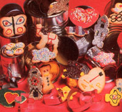

Have you ever looked at a large pile of tin cans-flattened for recycling-and thought they must be good for something other than filling up the trash bin?
Well, you're right! With tinsnips, a pair of needle-nosed pliers, and your own fertile imagination you can turn that heap of metal into a collection of cookie cutters which will rival store-bought cutters costing 50 cents apiece or more. The variety of shapes is limited only by your inventiveness and dexterity.
First, check your supply of empty tins. The cans that most vegetables, fruits, and pet foods come in are about the right size for star and heart shapes. Gingerbread men and animal outlines will require something larger, perhaps one- or two pound coffee cans.
Once emptied, the containers should be thoroughly washed and the labels, tops, and bottoms removed. (Most can openers take off the ends without leaving sharp metal edges . . . but check-carefully-to make sure, and discard any cans with jagged rims.) Flatten the resulting cylinders, and use tinsnips to cut an inch-wide strip from the top and another from the bottom. These closed, double strips will be bent into shapes for the cookie cutters. (Return the center portions to the scrap pile until you can come up with a use for them!)
A heart-shaped cutter is probably the easiest to make and the best to start with. Simply pull the flattened circle of meta apart in the center to make a football shape, and then bend one of the pointed ends inward. With needle-nosed pliers, it's no kick at all.
Cookie cutters with fancier shapes will be easier to bend if you mark fold lines on the strips while they're still flattened. For example, to make a five-pointed star, divide the strip into five equal parts and scratch or ink the lines on both sides.
Next, pull the strip into a football shape and bend one of the end points inside, just as you did for the heart. Now, bend the metal alternately in and out at the marks all around the strip. Make gentle bends at first ... you can perfect the shape on a second go round.
Crescent moons, six-pointed stars, and trees are other good forms to practice on. For gingerbread men, animals, letters, and other more complex designs, you may want to draw a pattern first and use string, thin wire, or paper strips to determine where the bends will need to be made.
Once you've completed a few cutters, it's time to get cooking and try them out. (Be sure to use the shapers sharp-edge-down for efficient dough slicing and hand protection.) And maybe this Christmas, instead of taking just a plate of cookies over to the neighbors, you can present them with a plate of cookie cutters as well!
EDITOR'S NOTE: You might want to wear gloves when working on this project, as the cans are quite sharp and prone to splinter when cut. A further suggestion: File the edges smooth and wash the cutters carefully-to remove all loose metal bits before you use them.
|
|
 |
|